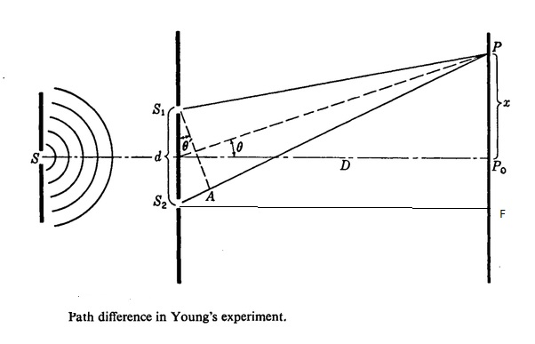

In Young's double slit experiment the wavefronts from the two illuminated slits superpose on the screen this leads to formation of alternate dark and bright fringesdue to constructive and destructive interference, respectively. At the center C of the screen ,the intensity of light is maximum and it is called central maxima
Let S1 and S2 be two slits separated by a distance d. GG'is the screen at a distance D from the slits S1 and S2. Point C is equidistant from both the slits. The intensity of light will be maximum at this point because the path difference of the waves reaching this point will be zero.
At point P, the path difference between the rays coming from the slits S1 and S2 is S2P - S1P.
Now, S1 S2 = d, EF = d, and S2F= D
∴In ΔS2PF,
S2=[S2F^2+PF^2]^(1/2)
S2P=[D^2+(x+d/2)^2]^(1/2)
=D[1+(x+d/2)/D^2]^(1/2)
Similarly, in ΔS1PE,
S1P=D[1+(x-d/2)^2/D^2]^(1/2)
∴S2P-S1P=D[1+1/2(x+d/2)^2/D^2]-D[1+1/2(x-d/2)^2/D^2]
On expanding it binomially,
S2P-S1P=1/(2D)[4xd/2]=(xd)/D
For bright fringes (constructive interference), the path difference is an integral multiple of wavelengths, i.e. path difference is nλ.
∴nλ=(xd)/D
x=(nλD)/dwhere n = 0, 1, 2, 3, 4, …
For n = 0, x0 = 0
n =1, x1=(λD)d
n = 2, x2=(2λD)/d
n =3, x3=(3λD)d
n=n, xn = (nλD)/d
Fringe width (β) → Separation between the centres of two consecutive bright fringes is called the width of a dark fringe.
∴β1=xn-x(n-1)=(lλD)/d
Similarly, for dark fringes,
xn=(2n-1)λ/2D/d
For n =1, x1=(λD)/(2d)
For n =2, x2=(3λD)/(2d)
The separation between the centres of two consecutive dark interference fringes is the width of a bright fringe.
∴ β2=xn-x(n-1)=(λD)/d
∴β1 = β2
All the bright and dark fringes are of equal width as β;1 = β2